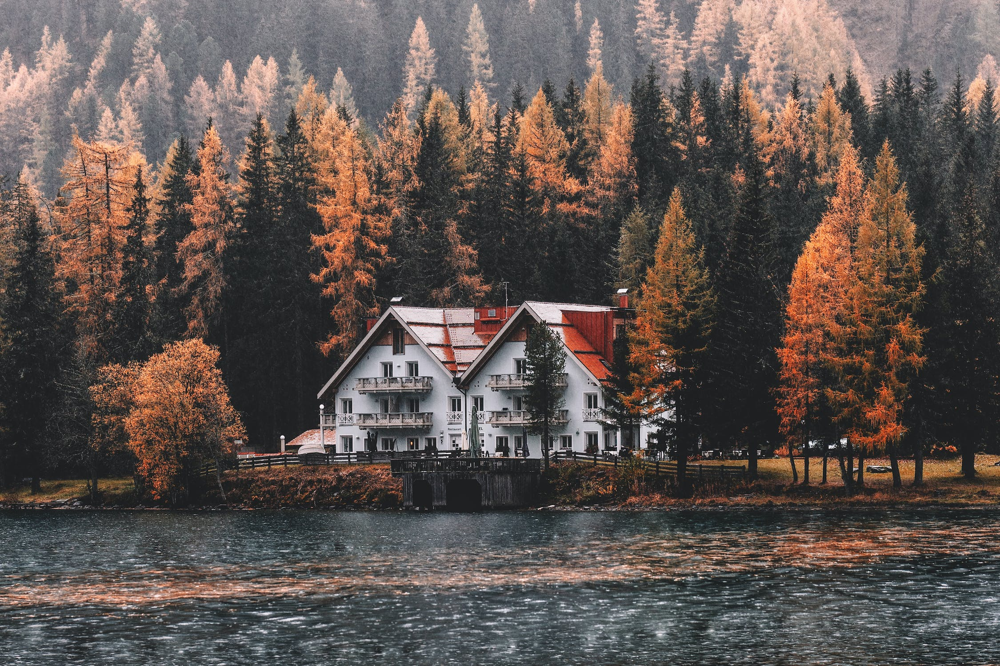

Founded in the picturesque town of Nilsby, nestled in the heart of Sweden, the Nilsby Chess Club has a rich and storied
history that spans several decades. Established in the early 1863s by a group of passionate chess enthusiasts, the club
has grown to become a symbol of intellectual pursuits, camaraderie, and a love for the age-old game of chess.
The club's early years were marked by modest gatherings at a local community center, where members would engage in
friendly games, share chess strategies, and foster a deep appreciation for the game's complexity. As word of the Nilsby
Chess Club spread, its membership swelled, drawing chess aficionados from neighboring towns and even international
visitors who were drawn to the club's welcoming atmosphere.
.jpeg)
Meet Alexander Björnsson, the visionary founder of the Nilsby Chess Club. Born and raised in the serene town of Nilsby,
Sweden, Alexander has always been a steadfast advocate for the game of chess and its unique ability to foster
intellectual growth and community bonds.
From a young age, Alexander demonstrated a remarkable aptitude for chess, honing his skills through countless hours of
practice and study. His passion for the game led him to dream of creating a space where fellow chess enthusiasts could
come together, learn, and share their love for this timeless pursuit.
In the early 1970s, armed with little more than his passion and a dream, Alexander established the Nilsby Chess Club.
What began as a small gathering of friends and neighbors in a local community center soon blossomed into a vibrant and
welcoming community of chess players from all walks of life.
Beyond the chessboard and strategic moves, it's the intangible bonds that truly define the Nilsby Chess Club. Here,
social connections and shared moments extend far beyond the checkered squares, creating an atmosphere that keeps members
coming back year after year.
Camaraderie: The Nilsby Chess Club is a sanctuary where like-minded individuals come together to share their love for
chess. In the midst of intense games and quiet contemplation, friendships are forged. Conversations flow freely, and
laughter fills the room, creating a warm and inviting ambiance.
Mentorship: Chess enthusiasts of all ages find a welcoming home in our club. Experienced players gladly take aspiring
chess stars under their wings, offering guidance and wisdom. The mentorship transcends chess, often leading to lifelong
bonds and valuable life lessons.
Coffee and Conversations: It's not just about the moves; it's also about the moments. The club's cozy corner with
steaming cups of coffee and friendly banter creates a space for relaxation and connection. It's where ideas are
exchanged, stories are told, and dreams are shared.